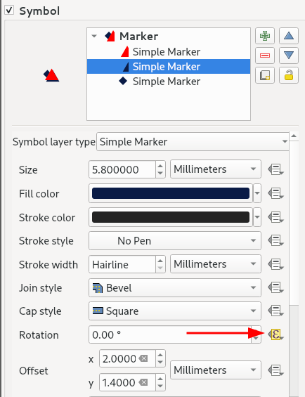

Snippets¶
🌏 QGIS Support¶
Should work with and version of QGIS 3.x. If you have QGIS 3.26 or better you can benefit from the animated icon support (see @nyalldawson's most excellent patch #48060).
For QGIS versions below 3.26, you can animate markers by unpacking a GIF image into its constituent frames and then referencing a specific frame from the symbol data defined property for the image file. Note that to do this extraction below you need to have the Open Source ImageMagick application installed:
First extract a gif to a sequence of images:
convert cat.gif -coalesce cat_%05d.png
Example of how to create a dynamically changing image marker based on the current frame count:
@project_home
||
'/gifs/cat_000'
||
lpad(to_string( @frame_number % 48 ), 2, '0')
||
'.png'
Note that for the above, 48 is the number of frames that the GIF was composed of, and it assumes the frames are in the project directory in a subfolder called gifs.
Line of travel¶
In this example we use a geometry generator to create a line between the origin point and the destination point:
if (@from_feature_id = $id OR @to_feature_id = $id,
-- read this from inside to out so
-- last tranform the geometry back to the map crs
transform(
-- densify the geometry so that when we transform
-- back it makes a great circle
densify_by_count(
-- move the geometry into a crs that
-- shows a great circle as a straight line
transform(
-- make a line from the previous pont to the next point
make_line(
geometry(@from_feature),
geometry(@to_feature)
),
@map_crs, 'EPSG:4326'),
99),
'EPSG:4326', @map_crs),
None)

Showing diagnostic info as a copyright label¶
Showing diagnostic information in the QGIS copyright label:
[%
'Feature Variables:' ||
' \n------------------------' ||
' \nPrevious Feature ' || to_string(coalesce(attribute(@previous_feature, 'name'), '-')) ||
' \nPrevious Feature ID ' || to_string(coalesce(@previous_feature_id, '-')) ||
' \n' ||
' \nNext Feature ' || to_string(coalesce(attribute(@next_feature, 'name'), '-')) ||
' \nNext Feature ID ' || to_string(coalesce(@next_feature_id, '-')) ||
' \n' ||
' \nHover Feature ' || to_string(coalesce(attribute(@hover_feature, 'name'), '-')) ||
' \nHover Feature ID ' || to_string(coalesce(@hover_feature_id, '-')) ||
' \n' ||
' \nFrom Feature ' || to_string(coalesce(attribute(@from_feature, 'name'), '-')) ||
' \nFrom Feature ID ' || to_string(coalesce(@from_feature_id, '-')) ||
' \n' ||
' \nTo Feature ' || to_string(coalesce(attribute(@to_feature, 'name'), '-')) ||
' \nTo Feature ID ' || to_string(coalesce(@to_feature_id, '-')) ||
' \n' ||
' \nTotal Hover Frames ' || to_string(coalesce(@hover_frames, 0)) ||
' \nCurrent Hover Frame ' || to_string(coalesce(@current_hover_frame, 0)) ||
' \nTotal Travel Frames ' || to_string(coalesce(@travel_frames, 0)) ||
' \nCurrent Travel Frame ' || to_string(coalesce(@current_travel_frame, 0)) ||
' \nTotal Frame Count ' || to_string(coalesce(@total_frame_count, 0)) ||
' \nFrame Number ' || to_string(coalesce(@frame_number, 0)) ||
' \nFrame Rate ' || to_string(coalesce(@frame_rate, 0)) ||
' \nwith Current Animation Action: ' || @current_animation_action ||
' \nTo Direction ' || coalesce(format_number(degrees(azimuth( geometry(@hover_feature), geometry(@previous_feature) ) ) ), 0) ||
' \nFrom Direction ' || coalesce(format_number(degrees( azimuth( geometry(@hover_feature), geometry(@next_feature) ) ) ), 0)
%]
Example output:

Variable size of labels¶
Variably changing the size on a label as we approach it in the animation:
```40 * ((@frame_number % @hover_frames) / @hover_frames)
## Calculating the angle between points
You can calculate the angle between the hover point and the previous point like this:
```python
coalesce(
format_number(
degrees(
azimuth(
geometry(@hover_feature),
geometry(@previous_feature)
)
)
), 0)
Rotation¶
You can set the angle of rotation for a symbol using this expression:


Using this technique you can also create an animation effect showing the source direction of travel and the new destination.
scale_linear (
@current_hover_frame,
0,
@hover_frames,
degrees(
azimuth(
geometry(@hover_feature),
geometry(@previous_feature)
)
),
degrees(
azimuth(
geometry(@hover_feature),
geometry(@next_feature)
)
)
)
Will produce something like this:

Flying points cluster¶
Here is an example where we animate all the points in a cluster that are not the hover point. We use an easing function to make the animation have an interesting circular motion.

-- Taken from https://spicyyoghurt.com/tools/easing-functions
-- t = Time - Amount of time that has passed since the beginning of the animation. Usually starts at 0 and is slowly increased using a game loop or other update function.
-- b = Beginning value - The starting point of the animation. Usually it's a static value, you can start at 0 for example.
-- c = Change in value - The amount of change needed to go from starting point to end point. It's also usually a static value.
-- d = Duration - Amount of time the animation will take. Usually a static value aswell.
-- Sinusoidal
-- -c / 2 * (Math.cos(Math.PI * t / d) - 1) + b;
-- Use with the animation in static mode
if(@hover_feature_id != $id,
array(
(-@hover_frames / 2) * (cos( (pi() * @frame_number / @hover_frames ) - 1)) ,
(-@hover_frames / 2) * (sin( (pi() * @frame_number / @hover_frames ) - 1))
),
array (0,0))
This function should be applied to the offset X,Y property of the symbol.